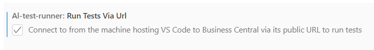

Working with Alpaca Containers
Cosmo Alpaca allows you to create and connect to Docker containers running in Azure. These are some settings that you will need to connect to them and run your tests from VS Code.
Test Runner Service
Test Runner Service is a separate app which provides an endpoint for the VS Code extension to trigger tests, download code coverage and performance profiles and query table names for the "Show Table Data" feature.
To create a container which has this app installed, follow these steps:
- Create Alpaca Project in AzDevOps: https://docs.cosmoconsult.com/de-de/cloud-service/devops-docker-selfservice/vsc-extension/create-project.html
- Create an app in the new project: https://docs.cosmoconsult.com/de-de/cloud-service/devops-docker-selfservice/vsc-extension/create-app.html
- In the created repository under .devops/cosmo.json you need to add "importTestApps": true on root level
- Refresh the tree in VS Code and create a new container based on that repository: https://docs.cosmoconsult.com/de-de/cloud-service/devops-docker-selfservice/vsc-extension/create-container.html
The Test Runner Service app can also be published into dev scope by cloning the source code from: https://github.com/jimmymcp/test-runner-service
Run via URL
Set the Run Test Via URL setting in the AL Test Runner extension settings.

With this setting enabled BCContainerHelper will create a connection to the client services endpoint of the container from your local machine.
Publishing from PowerShell
The Publishing from PowerShell setting must be disabled. This setting is only applicable to publishing into a local Docker container.
Debugging
To allow for test debugging the testRunnerServiceUrl must be set in the AL Test Runner configuration file.
Use the AL Test Runner: Open Config File command to open the file. The testRunnerServiceUrl should be in the format:
https://cosmo-alpaca-enterprise.westeurope.cloudapp.azure.com/%1soap/WS/%2/TestRunner?tenant=%3
where:
- %1 is the name of your server instance (copy from launch.json but remove "dev" from the end)
- %2 is the name of the Business Central company that you are running tests in
- %3 is the name of the tenant that you are connecting to in the container
For example:
https://cosmo-alpaca-enterprise.westeurope.cloudapp.azure.com/f0d3d3b46e42soap/WS/CRONUS UK Ltd./Codeunit/TestRunner?tenant=default